Deep Dive About Me!
- I’m Jaxon Delgado, a cybersecurity professional with a strong foundation in threat intelligence, vulnerability assessment, and penetration testing. My journey into cybersecurity has been fueled by curiosity, discipline, and a constant drive to grow in an ever-evolving field.
- Armed with a Bachelor’s Degree in Cybersecurity and Information Assurance from Western Governors University, I’ve built a versatile skill set rooted in both technical tools and analytical thinking. My hands-on experience with tools like Nmap, Wireshark, Burp Suite, Nessus, and Metasploit has allowed me to understand systems deeply—from network traffic and vulnerabilities to exploitation techniques. My training also extends across Linux environments (Kali, Ubuntu), scripting with Bash, Windows Server management, and reverse proxies via Nginx.
- Beyond the classroom, I’ve been active in applying and expanding my knowledge through real-world practice. I’ve participated in Capture the Flag competitions like the Correlation Cyber One Challenge, working in categories such as OSINT, web app security, and reconnaissance. I maintain a dedicated home lab and continuously challenge myself through platforms like TryHackMe and HackTheBox—where learning goes beyond theory and into practical, adversarial thinking.
- My certifications reflect a commitment to both breadth and depth: from CompTIA’s A+ to PenTest+, ISC²’s SSCP, and the ongoing pursuit of the CEH credential. Whether it’s performing cyber threat analysis, conducting log reviews, or securing networks, I approach every task with focus, integrity, and a problem-solver’s mindset.
- Currently based in Oakton, VA, I bring not only technical fluency but also a customer-focused work ethic developed through years of professional service. I’m known for being a quick learner, a collaborative team player, and someone who thrives in high-pressure environments—whether I’m working in a cybersecurity role or managing service operations.
- Looking ahead, my goal is to specialize in cyber threat intelligence and penetration testing, helping organizations proactively defend against evolving threats. I’m eager to contribute to a forward-thinking team where I can continue to grow, protect, and innovate.
- Let’s build a safer digital future—one layer at a time.
CompTIA Certifications
-
 PenTest+ (ID: XCG82E8SQBQ4105D)
Validate
PenTest+ (ID: XCG82E8SQBQ4105D)
Validate
-
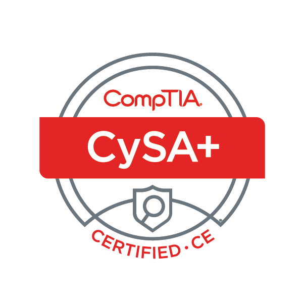
CySA+ (ID: 506WYJM631R4QMGK) Validate -
 Security+ (ID: 8C0MYE2YNFVQQF96)
Validate
Security+ (ID: 8C0MYE2YNFVQQF96)
Validate
-
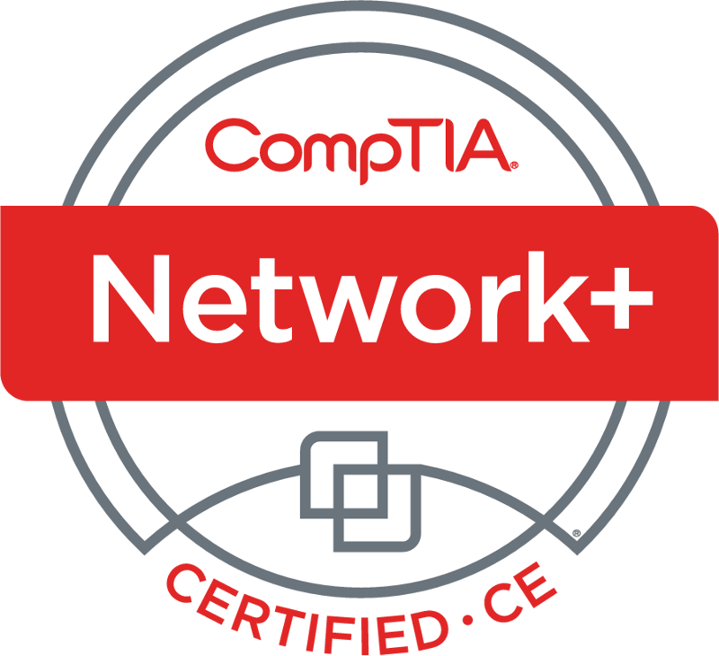
Network+ (ID: Q3KLJWCYHBREQ99Q) Validate -
 A+ (ID: CLEQ2YK5JM1Q16SS)
Validate
A+ (ID: CLEQ2YK5JM1Q16SS)
Validate
-
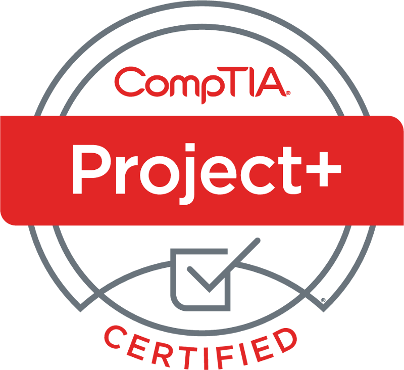
Project+ (ID: YRQ4D5B53FB4QF98) Validate
Certification Images
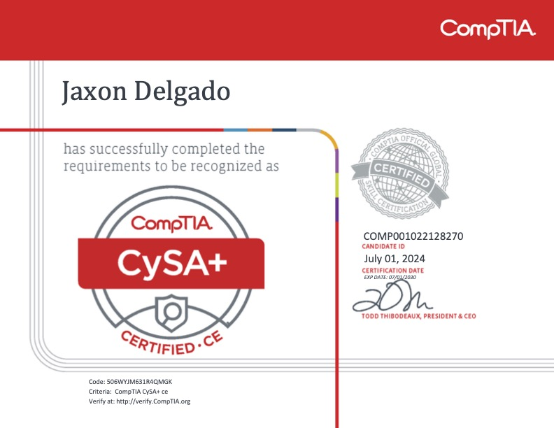
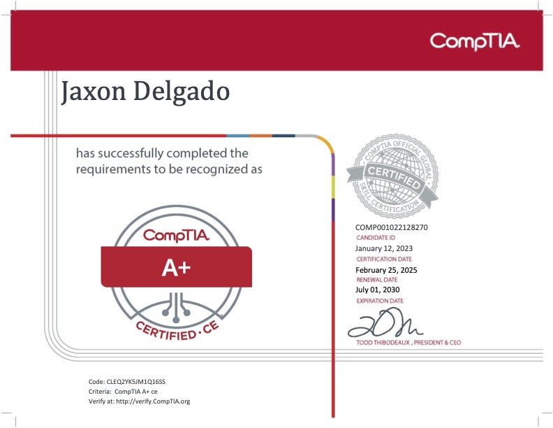
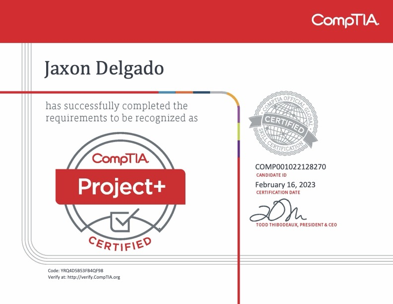
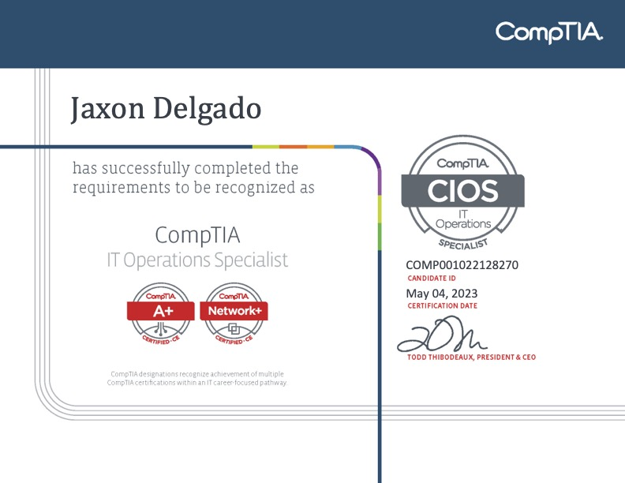
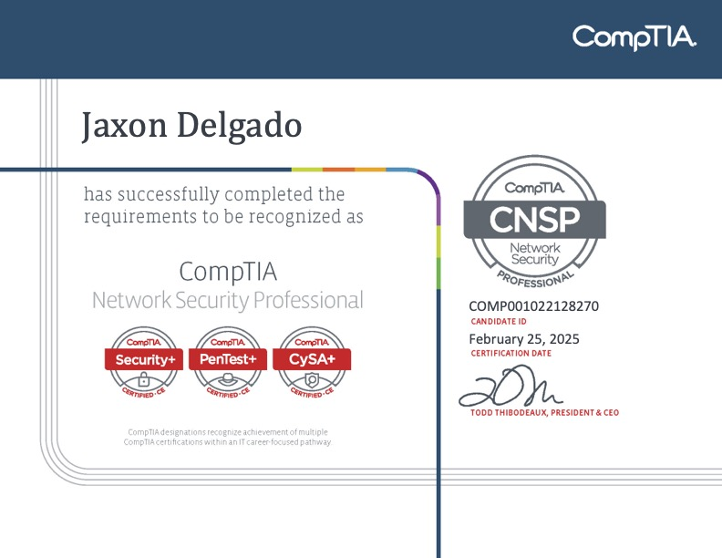
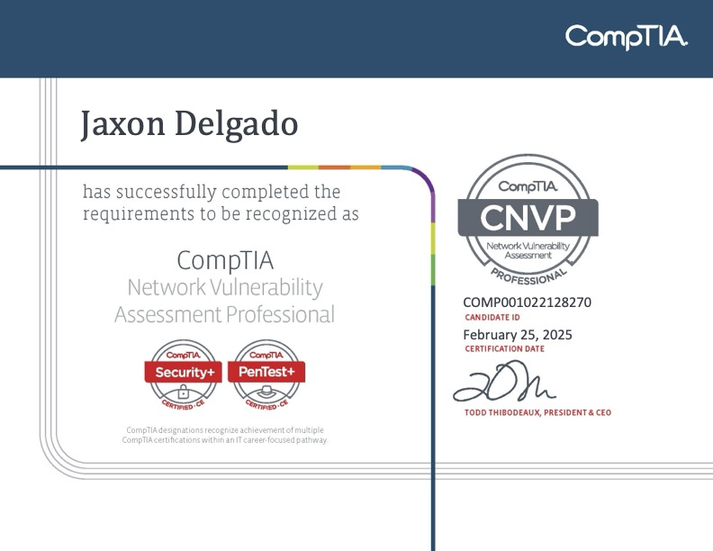
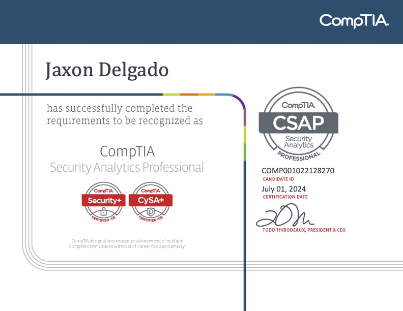
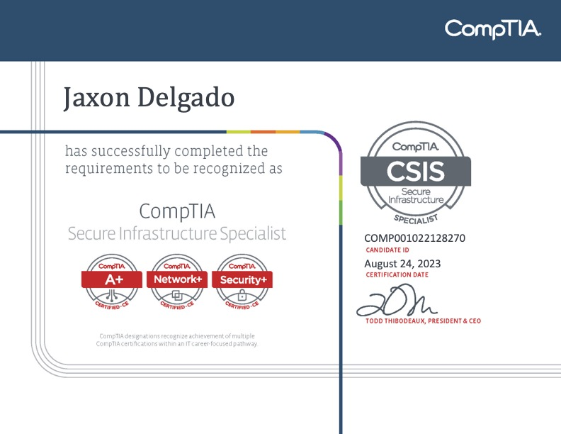